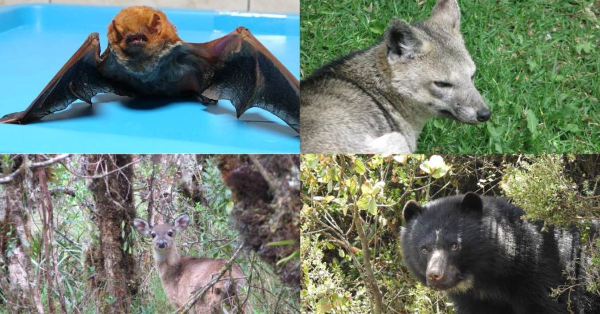
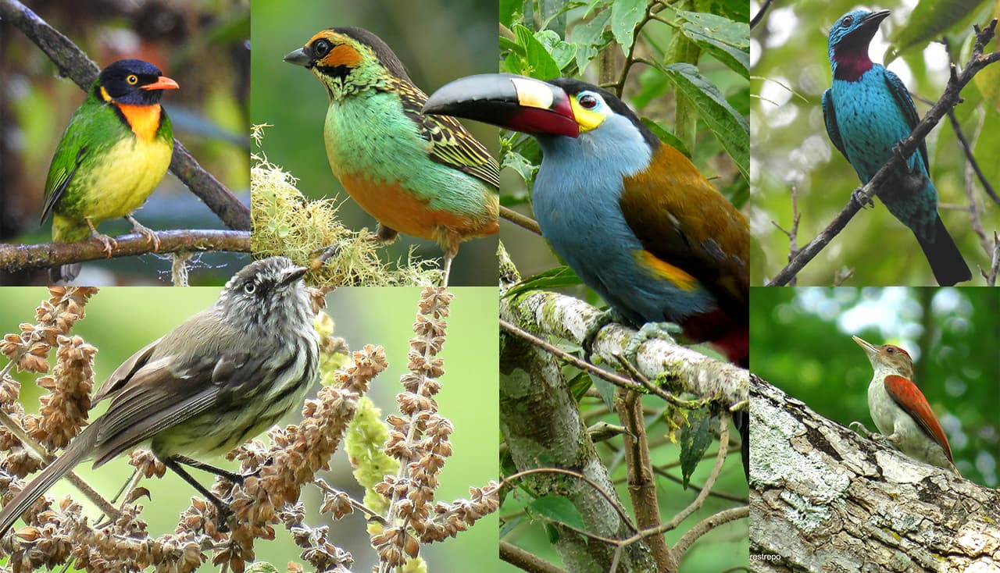
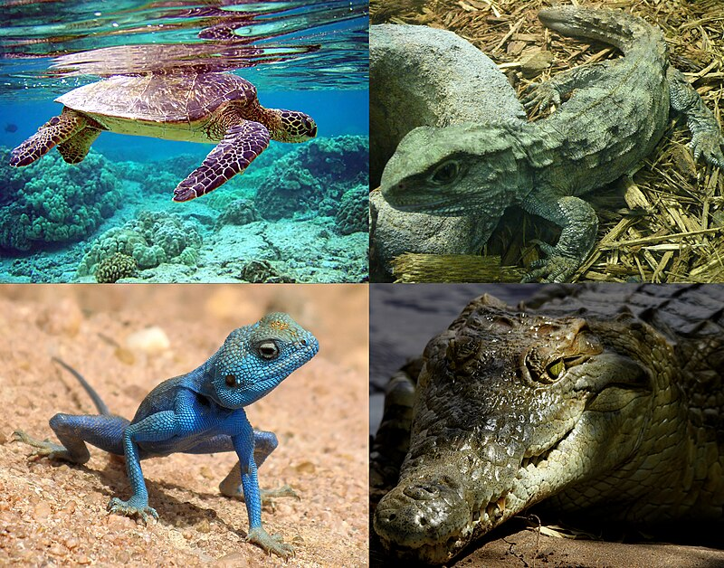

Acontinuación se describen algunos animales.
1 / 3

Los mamíferos. Caracterizados por una reproducción vivípara y por alimentar a sus crías con leche materna, los mamíferos son un grupo de animales de sangre caliente y sumamente diverso, en el que tienen cabida desde una jirafa hasta un león o una foca, desde un simio, un alce, un perro o un oso, hasta el propio ser humano.
2 / 3

Las aves. Descendientes evolutivos de los reptiles de antaño, las aves son las criaturas voladoras más grandes del mundo, cuyos cuerpos de huesos livianos y ahuecados están cubiertos de plumas de diversos colores. Su cabeza cuenta con un pico óseo para alimentarse y con dos patas con garras de distinta envergadura. Pueden ser de hábitos carnívoros, vegetarianos o carroñeros, y muchas de ellas habitan las superficies de los mares, ríos y lagos.
3 / 3

Los reptiles. Animales terrestres en su mayoría, de reproducción ovípara y cuerpo escamado, de sangre fría, alguna vez estos animales gobernaron el mundo. Hoy en día son un grupo diverso, en el que figuran las tortugas, los cocodrilos, las iguanas, las serpientes y otras formas de vida animal similares.
❮
❯